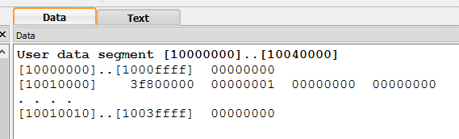

No
The floating point scheme used to represent numbers is different from the two's complement scheme. Here, for example is a program with a data section that uses both schemes.
## twoOnes.asm
##
.data
af: .float 1.0
ai: .word 1
Here is what QtSpim shows for the data section:
The two bit patterns (starting addresses 10010000 and 10010004) are completely different even though they represent the value one.
Here is more of the program:
## twoOnes.asm
##
.text
.globl main
main: lw $s0,af # get a one
lw $s1,ai # get another one
add $s2,$s0,$s1 # 1 + 1 = ??
.data
af: .float 1.0
ai: .word 1
Is this program likely to work?